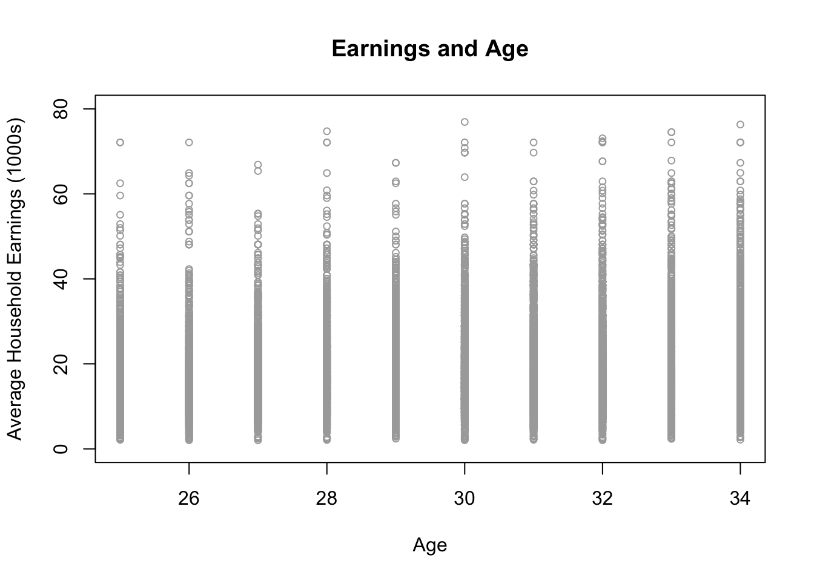

library(AER)
library(ggplot2)
mydata1=read.csv(file="tute9_cps.csv")Overview
Please create a Tutorial9 folder on your computer, and then go to the LMS site for ECOM 20001 and download the following files into the Tutorial9 folder:
- tute9.R
- tute9_cps.csv
The first file is the R code for tutorial 9, the second file is the .csv file that contains the dataset for the tutorial. The dataset has the following 5 variables:
| year | year in which an individual was randomly surveyed; either 1992 or 2012 |
| ahe | individual’s average hourly earnings (in real terms, 2012=100) |
| bachelor | equals one if an individual has a bachelor degree, 0 otherwise |
| female | equals one if an individual is female, 0 otherwise |
| age | age of the individual at the time of the survey |
In total, the dataset contains this information for 15,052 individuals in the U.S.
With the R file downloaded into your Tutorial9 folder, you are ready to proceed with the tutorial. Please go to the tute9.R file to continue with the tutorial.
Q1
Using either the ggplot() command in RStudio, create a scatter plot with age on the horizontal axis and ahe on the vertical axis.
Note that the ggplot() code in the tute9.R file overlays predicted values from quadratic or cubic regressions with ahe as the dependent variable and age as the independent variable, which helps with interpreting the results.
Does there appear to be a nonlinear relationship between age and ahe?
Provide an economic explanation for the relationship you find.
Solution
It is much easier to create the polynomial variables first e.g.
## Create nonlinear terms for polynomial regressions
mydata1$age2=mydata1$age*mydata1$age
mydata1$age3=mydata1$age*mydata1$age*mydata1$age
mydata1$age4=mydata1$age*mydata1$age*mydata1$age*mydata1$ageThen we can look at a scatter-plot of earnings (ahe) and age
plot(ahe~age,data=subset(mydata1),
main="Earnings and Age",
xlab="Age",
ylab="Average Household Earnings (1000s)",
col="darkgrey",
xlim=c(25,34),
ylim=c(0,80),
pch=1, cex=0.75)
However, we can produce a better looking graph using ggplot().
The plot on the left includes a fitted quadratic line while the one the right includes a fitted cubic line.
## Nicer scatter plot for fitting quadratic function with the ggplot package
## Quadratic function of degree 2 specified on the line where it states "formula = y ~ poly(x,2)"
pdf("scat_ahe_age_ggplot_quad.pdf")
ggplot(mydata1, aes(y=ahe, x=age)) + # Define the dataset, x and y variables for scatter plot
geom_point(alpha = .3) + # Allow for shading of the points in the scatter plot to help visualisation
stat_smooth(method = "lm", formula = y ~ poly(x,2), col="blue") + # Fit a polynomial of DEGREE 2 (QUADRATIC)
ggtitle("Relationship Between Earnings and Age") + # Scatter plot title
theme(plot.title = element_text(hjust = 0.5)) + # Center the scatter plot title
scale_x_continuous(name="Age", limits=c(25, 34),breaks=seq(25,34,1)) + # x-axis title, limits, lines
scale_y_continuous(name="Average Household Earnings (1000s)", limits=c(0, 100),breaks=seq(0,100,10)) # y-axis title, limits, lines
dev.off()
## Nicer scatter plot for fitting quadratic function with the ggplot package
## Cubic function of degree 2 specified on the line where it states "formula = y ~ poly(x,3)"
pdf("scat_ahe_age_ggplot_cube.pdf")
ggplot(mydata1, aes(y=ahe, x=age)) +
geom_point(alpha = .3) +
stat_smooth(method = "lm", formula = y ~ poly(x,3), col="blue") + # Fit a polynomial of DEGREE 3 (CUBIC)
ggtitle("Relationship Between Earnings and Age") +
theme(plot.title = element_text(hjust = 0.5)) +
scale_x_continuous(name="Age", limits=c(25, 34),breaks=seq(25,34,1)) +
scale_y_continuous(name="Average Household Earnings (1000s)", limits=c(0, 80),breaks=seq(0,80,10))
dev.off()There appears to be a quadratic relationship between age and ahe.
Intuitively, at younger ages earnings rise faster as people initially progress through their career within their jobs and moving across jobs.
As they get older however, people settle into their jobs, and income growth stabilises as their labour markets stable.
Q2
Using sequential hypothesis testing (see slide 31 of lecture note 8) estimate 4 polynomial regressions, where ahe is the dependent variable in each regression, and where the sets of regressors in each respective regression are:
- age, age2, age3, age4, bachelor, female
- age, age2, age3, bachelor, female
- age, age2, bachelor, female
- age, bachelor, female
Report heteroskedasticity-robust standard errors for each regression above, as well as for every regression used for the remainder of the tutorial.
Please answer the following questions:
Using the sequential hypothesis testing method, which is the preferred polynomial regression model?
Do any of the polynomial regressions appear to suffer from imperfect multicollinearity?
Report the overall regression F-statistic for your preferred regression model and interpret the joint test result.
Which test result confirms, statistically, that there is indeed a nonlinear relationship between ahe and age, holding fixed education and gender?
Solution
First run the following models:
## Quartic earnings-age relationship, holding education and gender fixed
reg1=lm(ahe~age+age2+age3+age4+bachelor+female,data=mydata1)
cov1=vcovHC(reg1, type = "HC1")
se1=sqrt(diag(cov1))
## Cubic earnings-age relationship, holding education and gender fixed
reg2=lm(ahe~age+age2+age3+bachelor+female,data=mydata1)
cov2=vcovHC(reg2, type = "HC1")
se2=sqrt(diag(cov2))
## Quadratic earnings-age relationship, holding education and gender fixed
reg3=lm(ahe~age+age2+bachelor+female,data=mydata1)
cov3=vcovHC(reg3, type = "HC1")
se3=sqrt(diag(cov3))
## Linear earnings-age relationship, holding education and gender fixed
reg4=lm(ahe~age+bachelor+female,data=mydata1)
cov4=vcovHC(reg4, type = "HC1")
se4=sqrt(diag(cov4))then use stargazer to report the results
you will see that an additional line has been inserted e.g.
omit.stats="f",which omits the overall (homoskedastic) F statistic from the stargazer output.I have also changed the order that the variables appear in the output so that the intercept term now appears at the top of the regression output using the
intercept.bottom-FALSEoption (this also means that you have to change thecovariate.labelsoption so that “Constant” appears as the first variable label).
This gives:
library(stargazer)
stargazer(reg1, reg2, reg3, reg4, type="html",
se=list(se1, se2, se3, se4),
intercept.bottom = FALSE,digits=2,
omit.stat = "f",
dep.var.labels=c("Annual Household Earnings (AHE)"),
covariate.labels=
c( "Constant",
"Age",
"Age Squared",
"Age Cubed",
"Age Quartic",
"Bachelor Degree",
"Female"
))| Dependent variable: | ||||
| Annual Household Earnings (AHE) | ||||
| (1) | (2) | (3) | (4) | |
| Constant | 1,525.86 | -98.28 | -19.79** | 1.28* |
| (1,327.65) | (105.11) | (8.73) | (0.77) | |
| Age | -212.59 | 10.04 | 1.98*** | 0.54*** |
| (182.18) | (10.81) | (0.60) | (0.03) | |
| Age Squared | 11.10 | -0.30 | -0.02** | |
| (9.34) | (0.37) | (0.01) | ||
| Age Cubed | -0.26 | 0.003 | ||
| (0.21) | (0.004) | |||
| Age Quartic | 0.002 | |||
| (0.002) | ||||
| Bachelor Degree | 7.75*** | 7.75*** | 7.75*** | 7.75*** |
| (0.15) | (0.15) | (0.15) | (0.15) | |
| Female | -3.53*** | -3.53*** | -3.53*** | -3.53*** |
| (0.15) | (0.15) | (0.15) | (0.15) | |
| Observations | 15,052 | 15,052 | 15,052 | 15,052 |
| R2 | 0.19 | 0.19 | 0.19 | 0.19 |
| Adjusted R2 | 0.19 | 0.19 | 0.19 | 0.19 |
| Residual Std. Error | 8.98 (df = 15045) | 8.98 (df = 15046) | 8.98 (df = 15047) | 8.99 (df = 15048) |
| Note: | p<0.1; p<0.05; p<0.01 | |||
| (1) | (2) | (3) | (4) | |
|---|---|---|---|---|
| (Intercept) | 1525.857 | -98.282 | -19.792 * | 1.279 |
| (1350.234) | (106.733) | (8.867) | (0.782) | |
| age | -212.591 | 10.038 | 1.979 ** | 0.541 *** |
| (184.829) | (10.938) | (0.603) | (0.026) | |
| age2 | 11.100 | -0.299 | -0.024 * | |
| (9.454) | (0.372) | (0.010) | ||
| age3 | -0.255 | 0.003 | ||
| (0.214) | (0.004) | |||
| age4 | 0.002 | |||
| (0.002) | ||||
| bachelor | 7.751 *** | 7.748 *** | 7.749 *** | 7.753 *** |
| (0.148) | (0.148) | (0.148) | (0.148) | |
| female | -3.530 *** | -3.527 *** | -3.526 *** | -3.525 *** |
| (0.149) | (0.149) | (0.149) | (0.149) | |
| *** p < 0.001; ** p < 0.01; * p < 0.05. | ||||
To carry out sequential hypothesis testing start at the highest order polynomial in this case \(\text{age}^4\) and determine whether this parameter is significant (Model 1); if not, drop this variable and rerun the regression (Model 2).
Here the parameter \(age^3\) is not significant; so drop this variable and rerun the regression.
In Model3 we see that \(age^2\) is significant so stop at this point - the quadratic model is our preferred specification .
- So, sequential hypothesis testing suggests using a quadratic model as the cubic and quartic regressors in age are statistically insignificant
To obtain the HC F statistic that tests for the overall significance of the model use the following (to obtain a HAC F statistic):
## Overall regression F-statistic for the quadratic regression,
# accounting for heteroskedasticity
linearHypothesis(reg3,c("age=0",
"age2=0",
"bachelor=0",
"female=0"),vcov = vcovHC(reg3, "HC1"))
Linear hypothesis test:
age = 0
age2 = 0
bachelor = 0
female = 0
Model 1: restricted model
Model 2: ahe ~ age + age2 + bachelor + female
Note: Coefficient covariance matrix supplied.
Res.Df Df F Pr(>F)
1 15051
2 15047 4 784.73 < 2.2e-16 ***
---
Signif. codes: 0 '***' 0.001 '**' 0.01 '*' 0.05 '.' 0.1 ' ' 1- The overall HC F-statistic for the quadratic regression is F=784.73 with df1=4 and df2=15047, and associated p-value<0.00001.
The test result implies that we reject the null at the 1% level of significance that the model has no ability to explain variation in ahe. In other words, the quadratic regression is useful, statistically, for explaining ahe.
- There’s clearly an imperfect collinearity problem with the cubic and quartic regressions.
This can be seen by how the standard errors blow up on the regression coefficients for age, age2, age3 and age4 when either age3 or age4 is included in the regression.
This is a very common problem to be aware of when formulating and estimating polynomial regressions: higher-order polynomials can lead to imperfect multicollinearity problems when there is not sufficient curvature in the relationship of interest (in our case age and ahe) for the data to allow one to estimate a higher-order polynomial (like cubic or quartic in our case).
Also notable is how the quartic regression coefficients themselves appear to explode compared to the cubic, quadratic and linear models.
This reflects the fact that the collinearity problem is so severe with the quartic model is basically bordering on a perfect collinearity problem, and is causing the OLS estimator to completely break down.In contrast, there is no problem of imperfect multicollinearity with the quadratic and linear models.
- The test statistic is
## Compute standard errors for reg3 based on the reg_output.txt file
## to obtain the t-statistic on Age Squared for the test of nonlinearity in the relationship
## between AHE and Age (relevant t-stat in the results is -2.3960)
coeftest(reg3, vcov = vcovHC(reg3, "HC1"))
t test of coefficients:
Estimate Std. Error t value Pr(>|t|)
(Intercept) -19.792496 8.731825 -2.2667 0.0234222 *
age 1.979367 0.597622 3.3121 0.0009283 ***
age2 -0.024318 0.010149 -2.3960 0.0165856 *
bachelor 7.749312 0.152421 50.8415 < 2.2e-16 ***
female -3.526058 0.145316 -24.2648 < 2.2e-16 ***
---
Signif. codes: 0 '***' 0.001 '**' 0.01 '*' 0.05 '.' 0.1 ' ' 1The t-statistic and p-value on the age2 coefficient in the quadratic reject are -2.40 and 0.017, respectively.
That is, we reject the null that the age2 coefficient equals 0 at the 5% level of significance. This implies we reject the null of no nonlinearity in the relationship between age on ahe.
Q3
Run another nonlinear regression with the following set of regressors, without any other control variables:
- age, age2
Compare your regression results to the results that you found in question 2 where you estimate a quadratic regression model where bachelor and females are included as controls.
Is it important to include bachelor and female as control variables in estimating the nonlinear relationship between ahe and age.
Solution
Run the following R script chunk given in Canvas;
## Quadratic earnings-age relationship, holding education and gender fixed
reg5=lm(ahe~age+bachelor+female,data=mydata1)
cov5=vcovHC(reg5, type = "HC1")
se5=sqrt(diag(cov5))
## Quadratic earnings-age relationship, without controling for education or gender
reg6=lm(ahe~age+age2,data=mydata1)
cov6=vcovHC(reg6, type = "HC1")
se6=sqrt(diag(cov6))Output the results to a HTML file using stargazer:
stargazer(reg1,reg2,reg3,reg4, reg5, type="html",
se=list(se1,se2,se3,se4, se5),
digits=2,
omit.stat = "f",
dep.var.labels=c("Annual Household Earnings (AHE)"),
covariate.labels=
c("Age",
"Age Squared",
"Age Cubed",
"Age Quartic",
"Bachelor Degree",
"Female",
"Constant"))| Dependent variable: | |||||
| Annual Household Earnings (AHE) | |||||
| (1) | (2) | (3) | (4) | (5) | |
| Age | -212.59 | 10.04 | 1.98*** | 0.54*** | 2.24*** |
| (182.18) | (10.81) | (0.60) | (0.03) | (0.66) | |
| Age Squared | 11.10 | -0.30 | -0.02** | -0.03*** | |
| (9.34) | (0.37) | (0.01) | (0.01) | ||
| Age Cubed | -0.26 | 0.003 | |||
| (0.21) | (0.004) | ||||
| Age Quartic | 0.002 | ||||
| (0.002) | |||||
| Bachelor Degree | 7.75*** | 7.75*** | 7.75*** | 7.75*** | |
| (0.15) | (0.15) | (0.15) | (0.15) | ||
| Female | -3.53*** | -3.53*** | -3.53*** | -3.53*** | |
| (0.15) | (0.15) | (0.15) | (0.15) | ||
| Constant | 1,525.86 | -98.28 | -19.79** | 1.28* | -21.05** |
| (1,327.65) | (105.11) | (8.73) | (0.77) | (9.57) | |
| Observations | 15,052 | 15,052 | 15,052 | 15,052 | 15,052 |
| R2 | 0.19 | 0.19 | 0.19 | 0.19 | 0.02 |
| Adjusted R2 | 0.19 | 0.19 | 0.19 | 0.19 | 0.02 |
| Residual Std. Error | 8.98 (df = 15045) | 8.98 (df = 15046) | 8.98 (df = 15047) | 8.99 (df = 15048) | 9.86 (df = 15049) |
| Note: | p<0.1; p<0.05; p<0.01 | ||||
There are large changes in the coefficient on age (1.979 vs. 2.242), and on age2 (-0.024 vs. -0.029).
We also see a substantial rise in the R-squared in column 3 to 0.188 from 0.021, once bachelor and female are controlled for.
These large changes in the coefficients and R-Squared’s suggests that the quadratic regression with bachelor and female as controls is the most appropriate model for the age on ahe relationship.
Q4
Using an estimated quadratic regression model with ahe as the dependent variable and age, age2, bachelor, and female as regressors, interpret two separate partial effects of increasing age from 25 to 28, and from 28 to 31, using only the estimated regression coefficient on age, and ignoring the regression coefficient on age2.
Are the two (incorrect) partial effects the same?
Solution
If we only focused on the coefficient on age for estimating the partial effect of increasing age from 25 to 28, and from 28 to 31 on ahe we would obtain a partial effect of \(1.979 \times 3 \times \$1000 = \$5937\) increase in earnings from either change.
The incorrect partial effects are the same because working with a linear model assumes the same partial effects everywhere, no matter the level of age.
Q5
Using the quadratic regression model you estimated in question 4, compute the nonlinear partial effects on ahe from:
- increasing age from 25 to 28
- increasing age from 28 to 31
- increasing age from 31 to 35
Use the general approach described in slides 16 to 18 of lecture note 8 for your calculations.
- Contrast your partial effects from increasing age from 25 to 28 and from 28 to 31 to the (incorrect) partial effects you computed in question 4. Why do your results differ in questions 4. and 5.?
- Interpret and contrast each of the 3 (correct) partial effects you have computed. Are they larger or smaller in magnitude with higher levels of age?
Solution
Here we have a little more coding required:
First run this,
## Re-run quadratic regression with controls for computing partial effects
reg=lm(ahe~age+age2+bachelor+female,data=mydata1)Then, create two new data frames for age=25 and age=28 for computing the partial effect of going from age=25 and age=28 years old.
## Construct dataframe for predicting ahe based on 'reg' model for age=25
newdata1=data.frame(age=25,age2=25*25,bachelor=1,female=1)
## Construct dataframe for predicting ahe based on 'reg' model for age=28
newdata2=data.frame(age=28,age2=28*28,bachelor=1,female=1)
## Compute the predicted value of ahe for age=25 based on 'reg' model and values
## of age, age2, bachelor, and female in newdata1
ahe1=predict(reg, newdata=newdata1)
## Compute the predicted value of ahe for age=28 based on 'reg' model and values
## of age, age2, bachelor, and female in newdata2
ahe2=predict(reg, newdata=newdata2)
# then
## Compute partial effect on ahe from changing from age=25 to age=28
dahe=ahe2-ahe1Running these chunks you should get to the following:
- the results of running the regression above
- creation of 2 data frames (one for 25 y.o, another for 28 y.o.)
- using the predict function to obtain the respective predicted values for age
- then calculate the partial effect (to print out the results you can use the paste command - this was used in the \(R\) script for tutorial 3 - see lines 356-357 in tute3.R for example \(\rightarrow\) this highlights the need to have a look at the code provided each tute.
So, don’t just hit the Source button in \(R\) Studio when running the \(R\) script given on Canvas , rather try to work through the code that Aaron has provided each week.
## Construct dataframe for predicting ahe based on 'reg' model for age=25
newdata1=data.frame(age=25,age2=25*25,bachelor=1,female=1)
## Construct dataframe for predicting ahe based on 'reg' model for age=28
newdata2=data.frame(age=28,age2=28*28,bachelor=1,female=1)
## Compute the predicted value of ahe for age=25 based on 'reg' model and values
## of age, age2, bachelor, and female in newdata1
ahe1=predict(reg, newdata=newdata1)
paste("the predicted value of ahe for age=25 based on 'reg' model and values of age, age2, bachelor, and female in newdata1" ,ahe1)
## [1] "the predicted value of ahe for age=25 based on 'reg' model and values of age, age2, bachelor, and female in newdata1 18.7162991368223"
## Compute the predicted value of ahe for age=28 based on 'reg' model and values
## of age, age2, bachelor, and female in newdata2
ahe2=predict(reg, newdata=newdata2)
paste("the predicted value of ahe for age=28 based on 'reg' model and values of age, age2, bachelor, and female in newdata1" ,ahe2)
## [1] "the predicted value of ahe for age=28 based on 'reg' model and values of age, age2, bachelor, and female in newdata1 20.7878661295068"
# then
## Compute partial effect on ahe from changing from age=25 to age=28
dahe=ahe2-ahe1
paste("partial effect on ahe from changing from age=25 to age=28", dahe)
## [1] "partial effect on ahe from changing from age=25 to age=28 2.07156699268443"
dahe
## 1
## 2.071567then work out the partial effect for 28 to 31 years olds:
## Construct dataframe for predicting ahe based on 'reg' model for age=25
newdata3=data.frame(age=31,age2=31*31,bachelor=1,female=1)
## Compute the predicted value of ahe for age=25 based on 'reg' model and values
## of age, age2, bachelor, and female in newdata3
ahe3=predict(reg, newdata=newdata3)
paste("the predicted value of ahe for age=25 based on 'reg' model and values of age, age2, bachelor, and female in newdata3" ,ahe3)
## [1] "the predicted value of ahe for age=25 based on 'reg' model and values of age, age2, bachelor, and female in newdata3 22.4217121233129"
# then
## Compute partial effect on ahe from changing from age=28 to age=31
dahe2=ahe3-ahe2
paste("partial effect on ahe from changing from age=25 to age=28", dahe)
## [1] "partial effect on ahe from changing from age=25 to age=28 2.07156699268443"and the partial effect for 31 to 35 year olds:
## Construct dataframe for predicting ahe based on 'reg' model for age=25
newdata4=data.frame(age=35,age2=35*35,bachelor=1,female=1)
## Compute the predicted value of ahe for age=25 based on 'reg' model and values
## of age, age2, bachelor, and female in newdata3
ahe4=predict(reg, newdata=newdata4)
paste("the predicted value of ahe for age=35 based on 'reg' model and values of age, age2, bachelor, and female in newdata3" ,ahe4)
## [1] "the predicted value of ahe for age=35 based on 'reg' model and values of age, age2, bachelor, and female in newdata3 23.9192741167994"
# then
## Compute partial effect on ahe from changing from age=28 to age=31
dahe3=ahe4-ahe3
paste("partial effect on ahe from changing from age=31 to age=35", dahe3)
## [1] "partial effect on ahe from changing from age=31 to age=35 1.49756199348645"Consistent with the graphs we saw in Question 1 (particularly the ggplot() scatter plot using the quadratic model) we see a positive partial effect that is diminishing with larger values of age. This also lines up with our parameter estimates in the quadratic model where the estimated coefficient on age2 is negative (indicating a concave function).
\[ \Delta \widehat{Y} = \widehat{f} \left( X_1 + \Delta X_1,X_2, \dots , X_k \right)-\widehat{f} \left(X_1,X_2, \dots, X_k \right) \]
where \(\widehat{f} \left(X_1,X_2, \dots, X_k \right)\)
is the estimated nonlinear model.
For example, we get the following partial effect for a change in ahe from 25 to 28 years of age as:
\[\begin{align*}\Delta \widehat{ahe} & - \left( -19.7925 + 1.97937 \times 28 - 0.02432 \times 28^2 + 7.748 - 3.52606 \right)\\ & = - \left( -19.7925 + 1.97937 \times 25 - 0.02432 \times 25^2 + 7.748 - 3.52606 \right) \\ & = 2.07123\end{align*}\]
Q6
Compute the standard errors and 95% confidence intervals (CIs) for each of the three partial effects you computed in question 5.
Use the general approach described in slides 19-21 of lecture note 8 for your calculations.
Report the standard errors and briefly interpret each of the 95% CIs
Are the 95% CIs the same width around each of the three partial effects that you calculated?
Solution
Run the following Code to obtain the CI for the partial effect for 25 to 28 year olds. To obtain the CIs for the partial effects associated with the other two age groups you will have to change the code (please see the \(R\) script provided in the tute).
The F test for the 28 to 31 year olds is \(H_0: 3 \hat{\beta_1}+177\hat{\beta_2}\) and for the 31 to 35 year od group \(H_0:4\hat{\beta_1}+264\hat{\beta_2}\).
# Tutorial Exercises (Question 5.)
# You will have to change the code on line 220 to do parts b. and c.
# a. age changes from 25 (newdata1) to 28 (newdata2): null is 3*age+159*age2=0
# NOTE: (how tute9.R is originally set-up, for question 6 part a. with age=28 and age=31)
# b. age changes from 28 (newdata1) to 31 (newdata2): null is 3*age+177*age2=0
# c. age changes from 31 (newdata1) to 35 (newdata2): null is 4*age+264*age2=0
## Fstatistic for the joint test of the null that dahe=0
## change to 3*age+177*age2=0 for question 6 part b.
## change to 4*age+264*age2=0 for question 6 part c.
Ftest=linearHypothesis(reg,c("3*age+159*age2=0"),vcov = vcovHC(reg, "HC1"))
Ftest
##
## Linear hypothesis test:
## 3 age + 159 age2 = 0
##
## Model 1: restricted model
## Model 2: ahe ~ age + age2 + bachelor + female
##
## Note: Coefficient covariance matrix supplied.
##
## Res.Df Df F Pr(>F)
## 1 15048
## 2 15047 1 114.51 < 2.2e-16 ***
## ---
## Signif. codes: 0 '***' 0.001 '**' 0.01 '*' 0.05 '.' 0.1 ' ' 1
## Recover the Fstat from the joint test results in Ftest
Fstat=Ftest[2,3]
## Compute the standard error for the partial effect we computed, dahe
# (see slide 22 of Lecture note 8)
se_dahe=abs(dahe)/sqrt(Fstat)
## 95% CI for the partial effect we computed, dahe
dahe_ci95L=dahe-se_dahe*1.96
dahe_ci95H=dahe+se_dahe*1.96
dahe_ciwidth=dahe_ci95H-dahe_ci95L
## Outputting results
sprintf("partial effect: %f", dahe)
## [1] "partial effect: 2.071567"
sprintf("SE of partial effect: %f", se_dahe)
## [1] "SE of partial effect: 0.193589"
sprintf("95 CI lower bound for partial effect: %f", dahe_ci95L)
## [1] "95 CI lower bound for partial effect: 1.692133"
sprintf("95 CI upper bound for partial effect: %f", dahe_ci95H)
## [1] "95 CI upper bound for partial effect: 2.451001"
sprintf("Width of 95 CI for partial effect: %f", dahe_ciwidth)
## [1] "Width of 95 CI for partial effect: 0.758867"Standard errors and 95% CIs for the partial effect on age from
- increasing age from 25 to 28 years
- se=0.194 \(\Rightarrow\) $194
- 95% CI = [1.692, 2.451] \(\Rightarrow\) [$1692,$2451]
- 95% CI width = 0.759 \(\Rightarrow\) $759
- increasing age from 28 to 31 years
- se=0.078 \(\Rightarrow\) $784
- 95% CI = [1.482, 1.786] \(\Rightarrow\) [$1482,$1786]
- 95% CI width = 0.304 \(\Rightarrow\) $304
- increasing age from 31 to 35 years
- se=0.309 \(\Rightarrow\) $309
- 95% CI = [0.892, 2.103] \(\Rightarrow\) [$892,$2103]
- 95% CI width = 1.211 \(\Rightarrow\) $1211

The 95% CIs indeed differ across the three partial effects. This again is a function of the non-linearity in the regression model.
The confidence intervals are tighter around the partial effect for the change in age from 28 to 31 years relative to the other partial effects because there are more data points in the sample for this age range relative to the 25 to 28 year group and the 31 to 35 year old group.
The method used here is the same as that Lecture Note 8 Slides 22-28.
For example, to obtain the required standard error in the estimation of the 95% CI for the partial effect of age between 25 to 28 years, use
\[\begin{align*} \Delta \widehat{ahe}_{i} &=\left({\beta}_{0}+{\beta}_{1}28+{\beta}_{2}28^{2}+{\beta}_{3}bachelor_{i}+{\beta}_{4}female_{i}\right)\\&-\left({\beta}_{0}+{\beta}_{1}25+{\beta}_{2}25^{2}+{\beta}_{3}bachelor_{i}+{\beta}_{4}female_{i}\right) \\ &={\beta}_{1}28+{\beta}_{2}28^{2}-{\beta}_{1}25-{\beta}_{2}25^{2} \\ &={\beta}_{1}28+{\beta}_{2}784-{\beta}_{1}25-{\beta}_{2}625 \\ &=3{\beta}_{1}+159{\beta}_{2} \end{align*}\]
then test
\(H_0: 3{\beta}{1}+159{\beta}{2}=0\)
obtain the F statistic, and then compute:
\(SE(\Delta \widehat{ahe}_{i})=\frac{|\Delta \widehat{ahe}_{i}|}{\sqrt{F}}\)